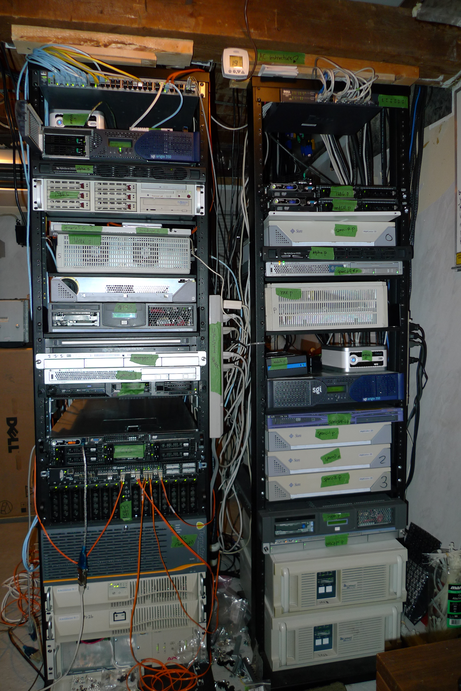

L1002-01: Redes de datos
En esta lectura se muestran los conceptos introductorios a las redes de datos.
Redes de datos
Una red de datos es un sistema compuesto de dispositivos electrónicos y equipos de comunicación que permiten el intercambio de información en diferentes formatos a través de una red.
Las organizaciones y empresas dependen de la infraestructura de red para realizar muchas de sus tareas y procesos de negocio.
OK |

Dispositivo de red |
Tipos de redes
Existen diferentes tipos de redes que se pueden clasificar dependiendo del área que cubra o el tipo de datos o tecnología que utilizan. Algunos ejemplos de redes que se utilizan de forma habitual hoy en día son:
Red de área local (LAN): Una red de área local es un tipo de red de telecomunicaciones que conecta dispositivos electrónicos en un área geográfica relativamente pequeña, como un edificio, una oficina, una casa o una sala de informática. Estas redes están diseñadas para facilitar la comunicación y el intercambio de datos entre dispositivos que se encuentran en proximidad física.
Red de área metropolitana (MAN): Una red de área metropolitana es una red de telecomunicaciones que conecta diferentes ubicaciones dentro de una ciudad o área metropolitana, situándose como una solución intermedia entre las redes LAN y las redes WAN.
Red de área extensa (WAN): Las redes de área extensa, son redes de telecomunicaciones que cubren áreas geográficas muy amplias, incluso llegando a interconectar ubicaciones que se encuentran a mucha distancia o a nivel global. Las redes WAN se emplean en entornos empresariales para conectar sucursales, oficinas o puntos de venta en la industria, para supervisar y controlar dispositivos a distancia, y en aplicaciones gubernamentales y de investigación para la transmisión de datos entre ubicaciones distantes.
Diferencia entre una Intranet e INTERNET
A continuación se muestran las diferencias entre una Intranet e INTERNET:
Intranet
Una Intranet es una red privada local limitada a una organización. Sus características principales son:
Acceso restringido solo a miembros de la organización
Mayor control y seguridad
Optimizada para necesidades específicas
Compartición de recursos internos
Facilita la colaboración entre empleados
Usa protocolos TCP/IP

Dispositivos de una Intranet |
INTERNET
INTERNET es una red pública global que conecta Intranets en todo el mundo. Sus principales características son:
Acceso público y global
Conecta millones de redes diferentes
Requiere medidas de seguridad robustas
Permite acceder a servicios y recursos públicos
Usa protocolos TCP/IP

INTERNET |
Medios de transmisión
Se trata de los canales físicos por los que se transmiten los datos entre los diferentes nodos o componentes. En este tipo de comunicación se realiza por diferentes medios como los siguientes:
Coaxial (red cableada)
Fibra óptica (red cableada)
Par trenzado (red cableada)
Infrarrojos (red inalámbrica)
Microondas (red inalámbrica)
Radiofrecuencia (red inalámbrica)
Redes inalámbricas
Las redes inalámbricas utilizan tecnologías de comunicación basadas en señales de radiofrecuencia o microondas para transmitir datos a través del aire, eliminando la necesidad de conexiones físicas por medio de cables.
Este tipo de redes de telecomunicaciones ofrecen una mayor flexibilidad y movilidad, pues no es necesario que los dispositivos estén situados en una zona fija. Son redes ideales para conectar dispositivos móviles como smartphones, tablets, cámaras de video-vigilancia u ordenadores portátiles, entre otros.
Entre las distintas clases de redes inalámbricas se tienen:
Basadas en tecnologías de radiofrecuencia: redes wifi.
Usando tecnologías como 3G, 4G o 5G: redes de telefonía móvil.
Redes ad hoc (se crean automáticamente entre dispositivos cercanos utilizando tecnologías como bluetooth o NFC).
Componentes de una Red
Conocer los componentes de red es útil para identificar problemas de conexión, descubrir posibles soluciones y optimizar su funcionamiento.
Servidor
Generalmente se trata de una computadora o aplicación encargada de proveer a otros equipos de unos determinados servicios, como el almacenamiento de información.
Los servidores no se deben confundir con dispositivos cliente. La mayoría de servidores ni siquiera tienen periféricos como el monitor, teclado o mouse. Para acceder y trabajar en estos, se suele trabajar de forma remota por línea de comandos.
Los servidores suelen ser equipos que muy rara vez se apagan y una vez configurados quedan trabajando con poca intervención del usuario. Solo se intervienen cuando sea necesario.
Los servidores se encargan de procesar las solicitudes de esos otros equipos, que en ocasiones se denominan clientes, a los que les entregan datos por medio de una red que puede ser local o por Internet.

SERVIDORES |
Equipos cliente
Equipo informático destinado a realizar una determinada labor profesional, técnica o científica. En resumen, en una oficina, los equipos cliente serían cada uno de los ordenadores con los que se lleva a cabo el trabajo y que generalmente están conectados entre sí a través de un servidor para facilitar los flujos de información, conectadas a periféricos (como impresoras, escáneres, pantallas de proyección, etc.) y a la vez conectadas a Internet.

Equipos cliente |
El Repetidor
Se trata de otro de los componentes de red que permiten retransmitir una señal de red débil o de bajo nivel de forma amplificada a una potencia superior. El funcionamiento y características de los repetidores dependerán también del tipo de red que se esté utilizando, por ejemplo si es por cable o por wifi.
Hub (comunicar varios equipos)
Los hubs son aparatos que permiten conectar múltiples dispositivos mediante cables, consiguiendo que funcionen como un único segmento de red. La traducción al castellano de este término es “cubo” o “concentrador”.
Bridge (puentes de red para comunicar segmentos de red)
Estos componentes de redes son dispositivos de interconexión de segmentos de redes. Básicamente se encargan de crear una sola subred conectando equipos sin necesidad de router, a través de segmentos de red que a su vez ya están conectando a diversos equipos.
Switch (Hub + Bridge)
Son dispositivos que se encargan de interconectar dos o más segmentos de red, de forma similar a como lo hacen los bridges. Permiten formar lo que se conoce como una red de área local (LAN, Local Area Network), cuyas especificaciones técnicas siguen el estándar denominado Ethernet.
Access Point (Switch inalámbrico)
Los puntos de acceso son esenciales en las redes inalámbricas, ya que, ayudan a ampliar el alcance y la capacidad de conectividad. Recibe la señal de acceso a la red del router y aumenta su potencia cubriendo un área determinada. A diferencia de un repetidor, crea un nueva señal independiente en lugar de amplificarla.

Dispositivos de red |
Router (para salir de una red LAN)
También se le denomina enrutador, ya que se encarga de encontrar el mejor camino para la transmisión de información a través de una red. Sus usos pueden ser más o menos complejos aunque el más común es aquel que permite comunicar a varios equipos, ya sea en casa o en una oficina (aprovechando la misma conexión a Internet).
El router recibe la conexión de red y la distribuye a todos los dispositivos conectados simultáneamente escogiendo la mejor vía para hacerlo de forma que la información completa llegue de manera adecuada y en el menor tiempo posible.

ROUTER: Dispositivo para salir a INTERNET |
Modem (Switch + Access Point + Router)
Algunos dispositivos de red son dispositivos todo en uno. Es el caso de los modem que son un Switch, un Access Point y un Router a la vez. Suelen ser facilitados por los prestadores de servicio de Internet.
En empresas grandes donde están conectados varios edificios como las universidades, lo normal es que hayan varios dispositivos de red cumpliendo una única función (Switch, Access Point o Router). Esto se debe a que en dichas empresas suele haber mucha gente conectada y un dispositivo de red todo en uno no resulta suficiente.
En hogares el número de personas para conectarse a Internet suele ser de una a diez, por ahorro de costos es mejor usar los modem.

MODEM |
RACK de telecomunicaciones
 RACK servidores OPENBSD 2009 |
{kind=link}
Internet de las cosas
El Internet de las Cosas (IoT) es un concepto tecnológico que describe una red de dispositivos físicos (“cosas”) conectados mediante sensores, software y otras tecnologías que les permiten recopilar y compartir datos a través de redes (como Internet o redes locales). Estos dispositivos pueden incluir desde objetos cotidianos —como electrodomésticos inteligentes o relojes— hasta máquinas industriales complejas.
Instalación de una red de datos
La instalación de una red de telecomunicaciones profesional requiere de una serie de elementos y componentes esenciales, los cuales son:
Cableado estructurado
El cableado actual está basado en estándares de comunicación que permiten transmitir grandes cantidades de información de forma rápida y segura. La elección del tipo de cable de red adecuado es fundamental para crear una infraestructura sólida, eficiente y que garantice el mayor nivel de rendimiento y seguridad de los datos.
Suministro eléctrico
Una infraestructura de red utiliza diferentes equipos y dispositivos electrónicos que necesitan de corriente eléctrica para funcionar, por lo que es importante contar con un buen sistema de suministro y de elementos que garanticen el acceso a la energía en todo momento, como equipos SAI que, además, ayudan a filtrar las fluctuaciones habituales de la red eléctrica, protegiendo a los dispositivos.
Hardware
En una red de telecomunicaciones se emplean una serie de elementos de hardware que son claves para su funcionamiento, como servidores, routers, switches, patch panels, firewalls, etc. La calidad y prestaciones de estos dispositivos es crucial para construir una infraestructura potente y fiable que garantice el mejor nivel de comunicación.
Software
Otra parte necesaria en una red de telecomunicaciones es el software necesario para gestionar distintas tareas y procesos. Por ejemplo, aplicaciones para el control del acceso a la red (gestiona distintos perfiles y roles de acceso), software para seguridad (anti-malware o cortafuegos) o herramientas de monitoreo de red, para evaluar el funcionamiento de la red, detectar nodos caídos, conocer qué dispositivos y usuarios están conectados.
Acceso a Internet
Dentro de una infraestructura de red se debe contar con acceso a internet para maximizar el alcance de la misma y poder llegar a cualquier lugar a nivel global. Para ello es necesario apostar por alternativas de alto rendimiento como es el caso de los servicios de fibra óptica simétricos, que garantizan un gran ancho de banda, tanto de subida como de bajada.
Control y mantenimiento
Es fundamental que una buena red de telecomunicaciones cuente con un sistema adecuado de monitoreo para controlar todo lo que sucede en la misma. Además, es imprescindible disponer de un sistema de mantenimiento que garantice el funcionamiento óptimo en todo momento, y que pueda resolver cualquier incidencia o problema en el menor tiempo posible.
Servicios de red
Los servicios de red son programas y protocolos que permiten a los usuarios realizar tareas específicas a través de la red. Los principales servicios son:
SSH
Son las siglas de Secure Shell y es un protocolo de red destinado principalmente a la conexión con máquinas a las que accedemos por línea de comandos. En otras palabras, con SSH podemos conectarnos con servidores usando la red Internet como vía para las comunicaciones.
Debido a su seguridad, SSH es el modo preferido para la realización de conexión con servidores que necesitamos administrar. La diferencia con respecto a otros protocolos más antiguos como Telnet es que el protocolo SSH siempre es seguro. Sin embargo, aprovechando la seguridad de las comunicaciones, también se utiliza para otros objetivos como:
Transferencia de Archivos Segura: Permite transferir archivos de forma segura entre sistemas locales y remotos utilizando herramientas como el comando SCP o SFTP.
Creación de Túneles de Red: SSH se utiliza para crear túneles de datos seguros que redirigen el tráfico de red a través de conexiones SSH, lo que puede ayudar a proteger la comunicación en redes no seguras. Se usan en sistemas como Ngrok, un software que permite a los desarrolladores exponer de manera remota los trabajos, tal como los tienen funcionando en su servidor de desarrollo local.
OpenSSH |
{kind=link}
DHCP
El Protocolo de configuración dinámica de host (DHCP) es un protocolo cliente-servidor que proporciona automáticamente un host de protocolo de Internet (IP) con su dirección IP y otra información de configuración relacionada, como la máscara de subred y la puerta de enlace de predeterminada.
DNS
Sistema de nombres de dominio. Traduce los nombres de dominios aptos para lectura humana (por ejemplo, www.amazon.com) a direcciones IP aptas para lectura por parte de máquinas (por ejemplo, 18.155.246.193).
El sistema DNS de Internet funciona como una agenda telefónica donde se administra el mapa entre los nombres y los números. Los servidores DNS convierten las solicitudes de nombres en direcciones IP, controlando a qué servidor se dirigirá un usuario final cuando escriba un nombre de dominio en su navegador web. Estas solicitudes se denominan consultas.
FTP
Son las siglas en inglés de File Transfer Protocol (protocolo de transferencia de archivos). FTP es el conjunto de reglas que los dispositivos de una red TCP/IP (Internet) utilizan para transferir archivos. Cuando usted usa Internet, en realidad se utiliza una variedad de diferentes protocolos. El FTP es simplemente el protocolo usado para transferir archivos.
HTTP
El http (del inglés HyperText Transfer Protocol o Protocolo de Transferencia de Hiper Textos) es el protocolo de transmisión de información de la World Wide Web. Se trata de un protocolo “sin estado”, es decir, que no lleva registro de visitas anteriores sino que siempre empieza de nuevo. La información relativa a visitas previas se almacena en estos sistemas en las llamadas “cookies”, almacenadas en el sistema cliente.
HTTPS
Por https se entiende HyperText Transfer Procotol Secure o Protocolo Seguro de Transferencia de Hipertexto, que no es más que la versión segura del http, es decir, una variante del mismo protocolo que se basa en la creación de un canal cifrado para la transmisión de la información, lo cual lo hace más apropiado para ciertos datos de tipo sensible (como claves y usuarios personales).
SMTP-POP
Los servidores de correo electrónico son indispensables para proveer de este servicio. Funcionan de forma similar a un buzón de correos central, donde se almacena y se gestionan mensajes de forma segura, en espera a ser leído por un grupo de clientes (usuarios).
SMTP (Servidores de correo de salida): Es el protocolo más usado por la flexibilidad en su operación al transferir información de un servidor de salida a uno de entrada, guardando la dirección de correo electrónico de quién lo envió.
POP (Post Office Protocol Version 3): Es una de las versiones más antiguas de protocolo y confiables. Cuando el dispositivo se conecta al servidor de correo, éste detecta el ordenador que realiza la acción y los aloja ahí, una vez descargados se eliminan de inmediato del servidor de entrada.
IMAP (Internet Message Access Protocol): Es un protocolo en los servidores de correo electrónico entrante que funciona para sincronizar el email a diferentes dispositivos. Se alojan siempre en el servidor y se visualiza a través de una copia de descarga.
VOIP
En inglés, las siglas VoIP significan Voice over Internet Protocol, es decir, voz sobre protocolo de Internet. La telefonía VoIP es un método que permite realizar llamadas de voz a través de la red, utilizando la banda ancha. Estas llamadas capturan el sonido procedente de un dispositivo móvil o fijo con conexión a Internet a través de un micrófono y lo transforman en paquetes de datos digitales. Los datos se transfieren a través de la red IP hasta el dispositivo receptor, al igual que el resto de contenidos transmitidos a través de Internet.
RDP
Las siglas RDP responden a Remote Desktop Protocol, o, en español, Protocolo de Escritorio Remoto. El protocolo RDP, entonces, permite que el escritorio de un equipo informático sea controlado a distancia por un usuario remoto. Existen diferentes programas de RDP como el RDP Remote Desktop de Microsoft –también conocido como RDP Windows–, o los más populares TeamViewer o PC Anywhere.
FIREWALL
Un firewall es un sistema de seguridad que supervisa y controla el tráfico de la red en base a un conjunto de reglas de seguridad. Los firewalls suelen situarse entre una red de confianza y una red no fiable; con frecuencia, la red no fiable es Internet. Por ejemplo, las redes de oficinas suelen utilizar un firewall para proteger su red de las amenazas en línea.
PROXY
Un servidor proxy proporciona una puerta de enlace entre los usuarios e Internet. Es un servidor denominado “intermediario”, porque está entre los usuarios finales y las páginas web que visitan en línea. Cuando una computadora se conecta a Internet, utiliza una dirección IP. Algunas personas usan los proxies para fines personales, como ocultar su ubicación mientras miran películas en línea. Sin embargo, para una compañía, pueden utilizarse para realizar varias tareas clave como las siguientes:
Mejorar la seguridad.
Proteger la actividad de los empleados en Internet de las personas que intentan espiarlas.
Equilibrar el tráfico de Internet para evitar choques.
Controlar el acceso de los empleados a los sitios web.
Guardar el ancho de banda almacenando archivos en caché o comprimiendo el tráfico entrante.
VPN
Una VPN o red privada virtual crea una conexión de red privada entre dispositivos a través de Internet. Las VPN se utilizan para transmitir datos de forma segura y anónima a través de redes públicas. Su funcionamiento consiste en ocultar las direcciones IP de los usuarios y cifrar los datos para que nadie que no esté autorizado a recibirlos pueda leerlos.